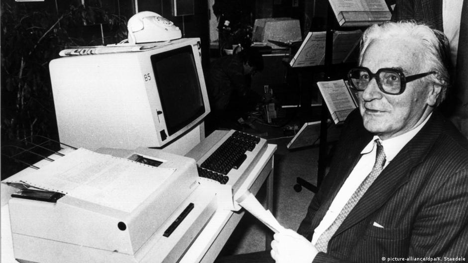

En 1941, Konrad Zuse fue el primero en construir una computadora que funcionase. Lo hizo en el salón de la casa de sus padres en Berlín. Este ordenador podía guardar 64 palabras.
Thomas Edison inventó el foco; los hermanos Wright fueron los primeros en elevarse en un avión a motor. Y ¿quién inventó la computadora? Registros de patentes han respondido a esta pregunta con el nombre Charles Babbage. Este inglés tuvo, en el siglo 19, la primera buena idea al respecto. Sin embargo, la primera computadora que funcionó de verdad fue la de Konrad Zuse y eso fue en 1941 en el salón de la casa de sus padres en Berlín. Podía guardar 64 palabras. El 22 de junio de 2010, Zuse hubiese cumplido 100 años. “Estudié ingeniería. Un ingeniero civil tiene que hacer cálculos de estática que dan mucho trabajo. Buscaba un camino para automatizar esos cálculos y finalmente llegué a un concepto, y con él a lo hoy llaman computadora”, contaba Konrad Zuse. Para su ordenador “Z1” o “Zuse 1”, Konrad Zuse utilizó varas, latas y palancas. Para este ingeniero civil, se trataba sólo de un experimento que tenía aún muchos errores. Siguió un segundo modelo, “Z2” y éste contaba con un relé telefónico. En 1941 logró la primera computadora del mundo, la legendaria “Z3”. “Z3” estaba compuesta por 600 relés telefónicos y tenía la forma de un inmenso armario. Hoy se la puede ver en el Deutsches Museum de Múnich. Ahí, Hein Molter responde a las preguntas de los visitantes: “La gente se queda atónita ante la máquina y no piensan que es una computadora. Siempre surgen preguntas interesantes; por ejemplo, la semana pasado un freak de la computación me preguntó si uno podría conectar esa máquina al Internet. Y mi respuesta fue: si cuenta con unos 28.000 años para poder esperar a que ella acabe de hacer el boot, sí”.


La Evolucion de La Computadora
Computer Museum
1965 - 2021
Se han marcado las computadoras como facilitadoras de trabajo para los humanos por la gran catidad de cosas que se peude realziar con ellas.

La invecion de Los Transistores
Computer Museum
1980 - 2021
Fueron desarrollados con silicio y reemplazaron el tubo de vacio, con el tiempo se ha avanzado tanto con ellos que los transistores modernos miden nanometros.
¿Qué es procesador?
El procesador es el cerebro del sistema, justamente procesa todo lo que ocurre en la PC y ejecuta todas
las acciones que existen. Cuanto más rápido sea el procesador que tiene una computadora, más rápidamente
se ejecutarán las órdenes que se le den a la máquina. Este componente es parte del hardware de muchos
dispositivos, no solo de tu computadora.
El procesador es una pastilla de silicio que va colocada en el socket sobre la placa madre dentro del
gabinete de la computadora de escritorio, la diferencia en una portátil es que está directamente
soldado. El procesador está cubierto de algo que llamamos encapsulado, y de lo cual existen 3 tipos:
PGA, LGA y BGA.
El procesador es uno de los componentes de la computadora que más ha evolucionado, dado a que se les
exige a los ingenieros que cada vez ofrezcan mejores procesadores para que las computadoras funcionen
más rápidas y de forma más eficaz. Su evolución no ha sido solo interna, sino que también su forma
externa fue modificada. Los fabricantes de procesadores de PC más populares son Intel y AMD.
Este componente es el más importante podríamos decir, y generalmente el más caro, pero sin el resto de
los componentes no podría servir ni actuar.